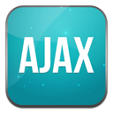

April 2018 - Volunteer Supervisor - Fancon 2018, Cape Town International Convention Centre
Responsibilities : Team leader, manage 30+ volunteers, assign tasks, local and international guest liason, organiser
July 2010- July 2011 - Assistant Language Teacher - The Japanese Exchange and Teaching Programme, Kaminoyama City Board of Education
Responsibilities : Class management, lesson planning and material preparation, student testing, assisting teachers, team-teaching, training students for competitions, educational demonstrations
Jan. 2012- Nov. 2015 - Demonstrator - University of Cape Town, Faculty of Medicine, Department of Human Biology
Responsibilities : Dissection demonstrator, practical setup and management, oral and practical examinations, forensic casework (including photography, laboratory examinations, case reports), conference attendance and presentations, model and display construction, dissection and practical demonstration safety management
March 2006- July 2009 - Disk Jockey and Presenter - UCT Radio, University of Cape Town
Responsibilities : Manage and resent own show, training of presenters